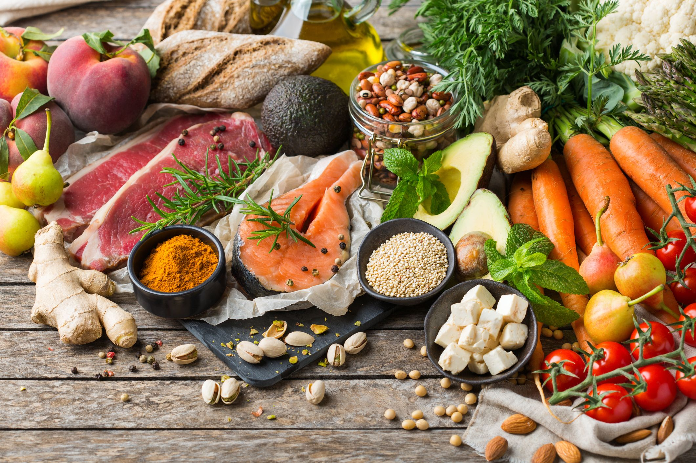

Ogólne podsumowanie
Największym minusem diety fleksitariańskiej wydaje się być zatem mała liczba badań oceniających jej wpływ na zdrowie.
Dieta fleksitariańska, podobnie jak inne diety roślinne, sprzyja jedynie niedoborom żelaza. W jednym z badań aż 38,6% semiwegetarian borykało się z tym problemem, kiedy w grupie wszystkożerców odsetek ten wynosił 25,5%. Brakuje dowodów, aby jednoznacznie stwierdzić czy fleksitarianie częściej niż wszystkożercy mają inne niedobory pokarmowe.
- obniżenie ryzyka chorób sercowo-naczyniowych
- zmniejszenie częstości występowania owulacyjnych zaburzeń płodności
- obniżenie ryzyka raka jelita grubego
- poprawa stanu odżywienia organizmu na wskutek zwiększonej ilości spożywanych fitozwiązków
- regulacja rytmu wypróżnień
- obniżenie poziomu cholesterolu
- podniesienie stopnia sytości po posiłku dzięki zwiększonemu spożycia błonnika.
Jak widać, za przejściem na dietę fleksitariańską stoi bardzo wiele argumentów. Będzie ona świetnym wyborem dla osób, które chcą poprawić jakość swojego życia, ale nie są w stanie ograniczyć spożycia mięsa do zera.

Aby móc uznać się za fleksitarianina, należy:
- opierać jadłospis na produktach pochodzenia roślinnego; warzywa lub owoce powinny stanowić podstawę większości posiłków
- jeść mniej mięsa, ponieważ ma ono stanowić tylko dodatek do jadłospisu
- stosować się do zasad zdrowej, zbilansowanej i pełnowartościowej diety, jednocześnie nie popadając w paranoję i nie eliminując niepotrzebnie pojedynczych grup produktów spożywczych.
